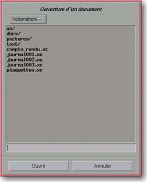

<!-- Documentation XQuad (c)1995-2000 AXENE contact axene@axene.org>
<html>

<head>
<title>Sélecteurs de fichier</title>
</head>

<body BGCOLOR="#FFFFFF" BACKGROUND="Images/back.gif" TEXT="#000000">

<p ALIGN="right"> </p>

<p><br>
<br>
Un sélecteur de fichier permet de choisir le fichier qui servira pour une lecture ou une
écriture d'information. Tous les sélecteurs de fichier fonctionnent de façon identique
; cependant, certains proposent des options supplémentaires. <br>
<br>
</p>

<hr>

<p align="center"><br>
 <br>
<small><i>Photo d'écran&nbsp;: Sélecteur de fichier type. </i></small></p>

<p><br>
</p>

<hr>

<p><br>
</p>
<a NAME="file_selector">

<h3>Eléments communs aux sélecteurs de fichier&nbsp;:</h3>
</a>

<ul>
  <li><a NAME="title_label">un <b>titre</b> indique le nom du sélecteur. </a><br>
    &nbsp;</li>
  <li><a NAME="sub_directories_list">une liste déroulante permet de remonter rapidement dans
    le répertoire du niveau supérieur. Elle contient tous les sous-répertoires de l'<b>arborescence
    directe</b>, du répertoire actuel jusqu'à la racine de l'arborescence. </a><br>
    &nbsp;</li>
  <li><a NAME="file_list">la liste suivante montre tous les <b>sous-répertoires et fichiers
    contenus dans le répertoire actuel</b>. Les noms de répertoires, classés par ordre
    alphabétique, apparaissent au début de la liste avec le caractère &quot;/&quot; à la
    fin de chaque nom. Les noms de fichiers concordant avec un éventuel filtre sont affichés
    à la suite. Double-cliquer sur un nom de répertoire permet de &quot;descendre&quot; dans
    celui-ci&nbsp;: le nom du répertoire actuel se rajoute à la liste déroulante, le
    répertoire sélectionné devient le nouveau répertoire actuel et son contenu est
    affiché dans cette liste. Un simple click sur un nom de fichier fait apparaître ce nom
    dans le champ texte juste en dessous. Double-cliquer sur un nom de fichier permet de le
    sélectionner sans autre confirmation. </a><br>
    &nbsp;</li>
  <li><a NAME="file_name_textfield">le champ texte indique le <b>nom du fichier</b>
    sélectionné dans la liste et permet d'entrer un nouveau nom. Il est possible d'entrer un
    nom de fichier complet avec le chemin. Si on entre et valide &quot;~&quot;, la racine de
    votre compte deviendra le nouveau répertoire courant ; si on entre et valide un nom de
    répertoire suivi du caractère &quot;/&quot;, le répertoire actuel pointera sur la
    nouvelle destination. Dans certains sélecteurs de fichier, une extension est ajoutée
    automatiquement au nom du fichier quand on le valide. </a><br>
    &nbsp;</li>
  <li><a NAME="left_button">le bouton de gauche de la partie inférieure d'un sélecteur de
    fichier permet d'<b>accepter le nom de fichier</b> pour l'action indiquée sur le bouton
    et ferme la boîte. </a><br>
    &nbsp;</li>
  <li><a NAME="button_cancel">le bouton de droite <i>&quot;Annuler&quot;</i> permet de ne pas
    donner suite à l'action et <b>ferme la boîte</b>. </a></li>
</ul>

<p><br>
</p>

<hr>
<a NAME="fs_load">

<h3>Ouverture d'un document&nbsp;:</h3>

<p>Le sélecteur de fichier <i>&quot;Ouverture d'un document&quot;</i> permet d'ouvrir un
document XQuad déjà sauvé. Le nom d'un fichier XQuad possède normalement l'extension
&quot;.xq&quot; ; seuls les fichiers ayant cette extension seront affichés. Ce sélecteur
de fichier n'offre aucune particularité. Pour le détail de son utilisation, voir le mode
d'emploi d'un </a><a HREF="Box_File_Selectors.html#file_selector">sélecteur de fichier
standard.</a> </p>

<p><br>
</p>

<hr>
<a NAME="fs_save">

<h3>Sauvegarde du document sous...&nbsp;:</h3>

<p>Le sélecteur de fichier <i>&quot;Sauvegarde du document sous...&quot;</i> permet de
choisir le nom sous lequel la feuille de calcul active va être sauvegardée sur le
disque. L'extension &quot;.xq&quot; sera ajoutée automatiquement au nom du fichier. Ce
sélecteur de fichier n'offre pas d'autre particularité. Pour le détail de son
utilisation, voir le mode d'emploi d'un </a><a HREF="Box_File_Selectors.html#file_selector">sélecteur de fichier standard.</a> </p>

<p><br>
</p>

<hr>
<a NAME="fs_print_in_file">

<h3>Impression dans le fichier...&nbsp;:</h3>

<p>Le sélecteur de fichier <i>&quot;Impression dans le fichier...&quot;</i> permet de
choisir le nom du fichier dans lequel les données de l'impression de la feuille de calcul
active seront sauvées. Ce sélecteur est appelé à partir de la boîte de dialogue '</a><a HREF="Box_Print.html">Impression</a>', lorsque l'on choisi <i>&quot;Fichier&quot;</i>
comme imprimante. Il est identique et d'emploi similaire à un <a HREF="Box_File_Selectors.html#file_selector">sélecteur de fichier standard</a>.
L'extension &quot;.ps&quot; est ajoutée automatiquement au nom de fichier. </p>

<p><br>
</p>

<hr>

<p ALIGN="right"></p>
</body>
</html>
